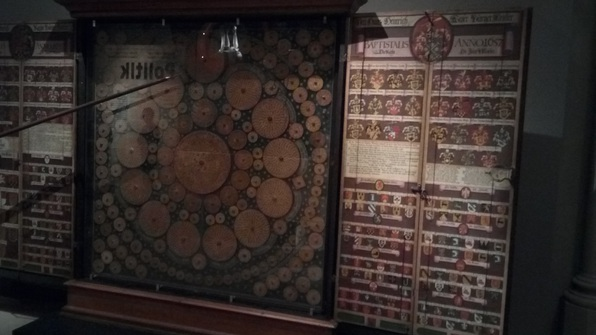

Woke up late, took a nice run. Chatted a bit with some of my swing family at the UW after seeing pictures of the quarter dance on the group chat :) Did a little bit of work, had breakfast and tried to explain some quantum information stuff to people downstairs. Then met Joan and Julie for a museum visit!
We went down the stairs from Culmann to the big museum right across from the Hauptbahnhof, which I’d (amazingly) never visited. It was really nifty.
There were some really interesting artifacts from the medieval history of Switzerland, including
 The list of crests on the side panel is actually a legend to tons of little crests on the circles comprising the chart :P
We also tried to decode some beautiful political satire paintings in German, and I got some of the sentences all the way through: Ich weiss jetzt wer meine Freunden sind!
–Angry Switzerland walking out of an OECD meeting into a room of pirate countries (Cayman Islands, etc).
We had a quick lunch at the museum’s bistro, and then I went to basketball. It was fun, I played a lot better than yesterday. Then I went home and wrote this log.